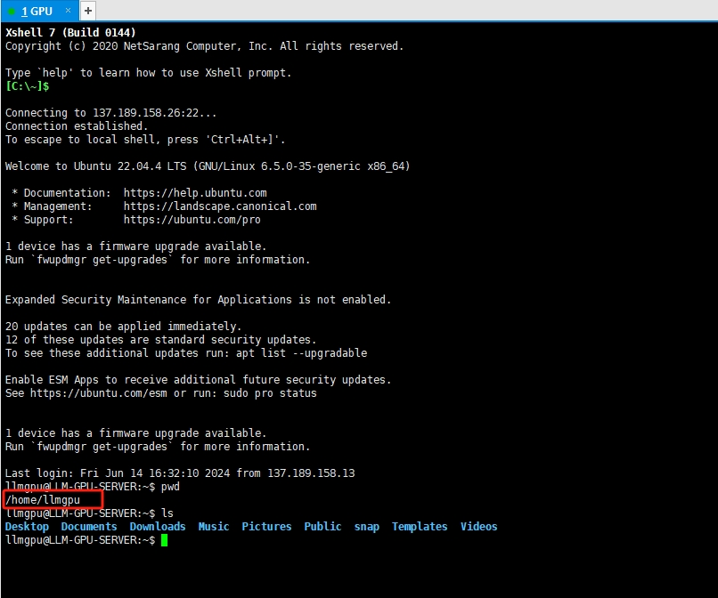
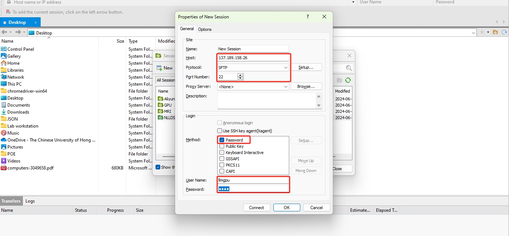
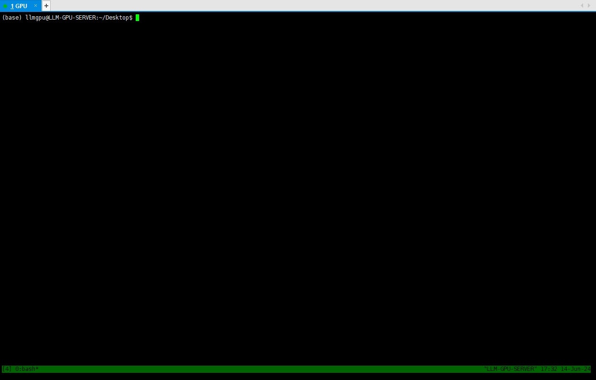
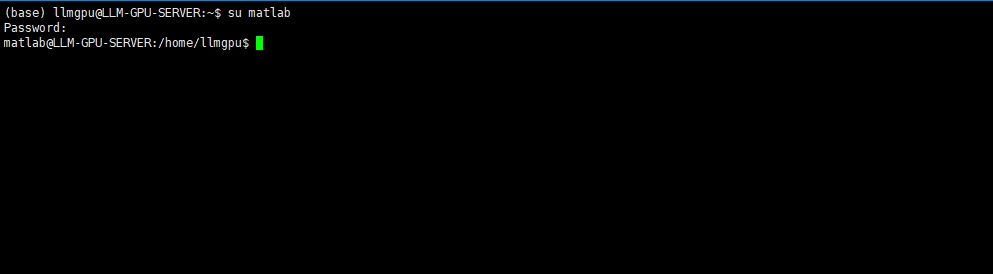

GPU Docs
Author: Yidu Wu
Last updated on June 17, 2024 by Yidu
Before using the workstation, if you have no experience in using clusters for computing, then we strongly recommend that you take a moment to read the contents of this manual.
Workstation Summary
| Computing Nodes | Detail | RAM |
|---|---|---|
| CPU | [1x] Intel Xeon w7-3455 2.50 GHz 24C/48T | 502GB |
| GPU | [1x] NVIDIA RTX A6000 | 48GB |
| Storage | Capacity | Disk | Mount |
|---|---|---|---|
| KXG80ZN84T09 NVMe KIOXIA | 4TB | /dev/nvme0n1 | / & /home |
| PC SN810 NVMe WDC | 2TB | /dev/nvme1n1 | /SSData0 |
| ST12000NM002J-2T | 12TB | /dev/sda | /BigData0 |
| Other Configurations | Remark |
|---|---|
| Network | 1Gbps LAN connected to CUHK network |
| Operating System | Ubuntu 22.04 LTS |
| Packages pre-installed | Version |
|---|---|
| Python | 3.10.12 |
| MATLAB | R2024a |
| CUDA | 12.0 |
| cuDNN | 8.9.7 |
| Conda | 24.1.2 |
| GCC/G++ | 11.4.0 |
| Cmake | 3.22.1 |
| Java | 1.8 |
| Git | 2.34.1 |
| Vim | 8.2 |
| Tmux | 3.2a |
| IP | Port | User Type | Remark |
|---|---|---|---|
| 137.189.158.32 | 22 | CUHK User | Off-campus user need connect CUHK VPN first |
| 8.219.66.9 | 6000 | Non-CUHK User | Forwarded by Aliyun, latency may exist |
Getting Started
This page gives minimum information to run a program on our computing cluster. If you are using the cluster for the first time, you should read this page carefully.
Get Your Account
Before you use the cluster, you should apply an account from our administrators. Please send an email to Yidu Wu (yiduwu@cuhk.edu.hk) with your name, position, and expected study years (for students).
If you are new to Linux
Unfortunately, our cluster is running Linux operating system. If you have never used Linux before, it may be pretty uncomfortable for you to use a new operating system by command line but not GUI. We understand your feeling, but please try to get familiar with Linux commands on a virtual machine before moving on.
The following document assumes you have experience with Linux.
For Windows Users
To access a Linux server on Windows, you need to install software through SSH and SFTP. You can try out the following software.
- SSH Client (For Command Line): MobaXterm, XShell (Recommand)
- SFTP Client (For File Upload): MobaXterm, Xftp (Recommand), FileZilla
Here is the URL to download Xshell and Xftp: https://www.netsarang.com/en/free-for-home-school/ . Please note that this is free, no purchase required.
Connect Example (XShell)
After installation we run Xshell, the first thing we need to do is to create a new session to connect to our cluster. Here is the configuration:
Protocal: SSHHost: IP Address (Reference Workstation Summary)Port: Port (Reference Workstation Summary)

After that, click Connect button and enter your username with password.


After connected, you can start executing your command now! Please note that each user will have their own home dir, as shown in the picture, /home/<your_username> is your home path. You can run your program and upload your files here.

Connect Example (XFtp)
Similar to above, we run XFtp and make the configuration.
Host: IP Address (Reference Workstation Summary)Protocal: SFTPPort: Port (Reference Workstation Summary)Method: Password
Enter your username with password and click connect button.

After connected, The left panel is your local file system and the right is the remote. You can now upload and download files as you like.

Please make sure that you only upload files to these three paths, which you have the full access:
/home/<your_username>: Your home dir (50GB quota, Ask me for more space If quota exceeded)/BigData0: Extra Disk (Reference Workstation Summary) (please store your large files here)/SSData0: Extra Disk (Reference Workstation Summary) (use it when /BigData0 disk full)
For Linux/MaxOS Users
The cluster can log through SSH. On Linux or macOS terminal, input the following command to login.
$ ssh <username>@<ip> -p <port>
After a successful connection, the server will prompt you to enter a password. Please enter the password which you got from administrators at this time. There will be no response on the interface when you enter the password, but the password has already been entered.
Change your password at your first login
An initial password was sent to each user for their first-time-login. For security reason, please change your password with:
$ passwd
Package Installation
Please note that for security reasons, all users do not have sudo permissions by default. It means that you cannot install the required packages by raising to root privileges with the sudo command! Nevertheless, you can still install the packages you need by the way of compiling the source code, although this will take some effort and requires some expertise in linux. Alternatively, you can contact the administrator to install the packages for you.
Run your Programme on our Compute Nodes
Since we only have 1 GPU right now, we are holding off on using e.g. SLURM resource management software to manage our cluster. Instead of it, at this stage we consider a negotiated allocation to use our compute nodes. An easy way to do this is to book it directly in the DingTalk calendar! Before using the cluster you should organize your schedule ahead of time and add it to our DingTalk calendar, making sure not to cross over with other people's schedules. Please use computing nodes strictly according to the calendar schedule. If there are indeed urgent tasks that need to be prioritized, please negotiate with the user who owns the current schedule.
Check the resources
Before running the program, check the GPU to ensure there are sufficient computing resources, input the following command.
$ nvidia-smi
And it will output:
+---------------------------------------------------------------------------------------+
| NVIDIA-SMI 535.171.04 Driver Version: 535.171.04 CUDA Version: 12.2 |
|-----------------------------------------+----------------------+----------------------+
| GPU Name Persistence-M | Bus-Id Disp.A | Volatile Uncorr. ECC |
| Fan Temp Perf Pwr:Usage/Cap | Memory-Usage | GPU-Util Compute M. |
| | | MIG M. |
|=========================================+======================+======================|
| 0 NVIDIA RTX A6000 Off | 00000000:AC:00.0 Off | Off |
| 30% 32C P8 12W / 300W | 308MiB / 49140MiB | 0% Default |
| | | N/A |
+-----------------------------------------+----------------------+----------------------+
+---------------------------------------------------------------------------------------+
| Processes: |
| GPU GI CI PID Type Process name GPU Memory |
| ID ID Usage |
|=======================================================================================|
| 0 N/A N/A 1995 G /usr/lib/xorg/Xorg 180MiB |
| 0 N/A N/A 2143 G /usr/bin/gnome-shell 47MiB |
+---------------------------------------------------------------------------------------+
You can see the relevant parameters of the GPU, such as model, CUDA version, memory usage, etc. In this case, The 308MiB / 49140MiB stands for 'used/total memory', make sure there is enough memory for you to use! You can also see all processes that are taking up memory, and if you make sure that a process doesn't need to run anymore, you can kill it to free up memory. But be careful not to kill programs that other users may be running!
Conda
First thing first, whenever you create a new python project, the most important step is setting up the python interpreter. Using the python interpreter of your virtual enviornment is recommended, which can separate the develop enviroments for each of your project.
Conda is officially recommended by PyTorch and TensorFlow. Here’s some conda command:
# create conda env with python (you can specify python version)
conda create --name <new-env-name> python=3.8
# check envs
conda env list
# activate env
conda activate <env-name>
# deactivate env
conda deactivate
# install package like pandas
conda install pandas
Tumx
If you only use ssh to connect to the server to run the program, the program will be shut down as soon as ssh breaks (Even if you don't end it manually, ssh will often break unexpectedly due to network problems). The solution is to use tmux to open a session and run it in the background, even if ssh breaks, tmux server will still keep that session for you, so the program will always run in the background.
Start a background terminal session using tmux.Simply run tmux, you can get a new session. After run the job, press Ctrl+B D shortcut to detach the session. When you return, use tmux ls to see the session ID, then use tmux a -t <ID> to attach the session and continue the job.
MATLAB
All of the above assumes you are using the python; if you are a MATLAB user, please read the following carefully.
We have already pre-installed the MATLAB (R2024a) in our cluster. Unfortunately, we are unable to share MATLAB licences within the cluster due to MATLAB's strict licensing requirements. And it's also not possible to sign in with multiple user accounts on the same server instance, whether it's a real or virtual server. This means that only one user is allowed to use MATLAB in our cluster at any given time, and if other users need to use it they need to queue up, so I recommend that you schedule a MATLAB appointment in our DingTalk calendar just like GPU before.
I recommend using the MATLAB resources in our cluster only when you need to use the GPU to assist in computing MATLAB program, because in this way the occupancy time of MATLAB is consistent with the occupancy time of the GPU. For other tasks, you can do it on your own computer with CPU.
Nevertheless, you can still use it without restriction by installing a separate MATLAB program in your own home dir. This assumes that you have a MATLAB licence and you can activate it with your own licence.
Instructions for using our pre-installed MATLAB:
Before using it you should get the username/password of our MATLAB user from the administrator, please note that this is a separate LINUX user which only used to run MATLAB. Please make sure to plan your time well and don’t take up too much time or conflict with others.
Please note that if you need to install any third-party tools, please contact the administrator!
Please also note that the pre-installed MATLAB in our cluster is tied to our administrator's licence. If you encounter MATLAB updates or verifications from time to time, please contact administrator for assistance.
We will give a running example of MATLAB below.
Running example (Python)
Here I will show you an example to run python programme.
- Suppose we want to execute the following Python code, which is the multiplication of two matrix of 10240 x 10240 dimensions:
import numpy as np
import cupy as cp
import time
# Generate matrix on the CPU
A = np.random.rand(10240, 10240).astype(np.float32)
B = np.random.rand(10240, 10240).astype(np.float32)
# Copy matrix to GPU memory
A_gpu = cp.array(A)
B_gpu = cp.array(B)
# CPU function
def cpu_matrix_mul(A, B):
return np.matmul(A, B)
# GPU function
def gpu_matrix_mul(A, B):
return cp.matmul(A, B)
# Test CPU Running time
start = time.time()
C_cpu = cpu_matrix_mul(A, B)
cpu_time = time.time() - start
print(f"CPU time consumption: {cpu_time:.6f} second")
# Test GPU Running time
start = time.time()
C_gpu = gpu_matrix_mul(A_gpu, B_gpu)
gpu_time = time.time() - start
print(f"GPU time consumption: {gpu_time:.6f} second")
-
The first thing we need to do is to upload this python file to our GPU cluster, We've already covered how to upload files with XFtp earlier on.
-
Supposed I have already uploaded the python file to my home path. Now we can check it.

We can see the test.py under my home dir. Now use vi test.py to view the file content.

- If there is no problem, we can prepare to run the code. Excute the following command to create a virtual enviornment for python.
conda create --name gputest python=3.9
Learn to use conda to separate the develop enviroments for each of your project is very important.
After that, excute command tmux and we will get a new window like this:

Tumx can make the program always run in the background even if you exit the ssh.
Now we need to activate the virtual python environment created before, like this:

We can find our python environment has changed from base to gputest.
- install the packages required.
conda install numpy
conda install -c conda-forge cupy
- Then we run the GPU python code, we can find that the GPU is much faster than the CPU.

Running example (MATLAB)
Here I will show you an example to run MATLAB programme.
- Suppose we want to execute the following matrix multiplication MATLAB code:
% Generate matrix on the CPU
A = rand(10240, 10240, 'single');
B = rand(10240, 10240, 'single');
% Copy matrix to GPU memory
A_gpu = gpuArray(A);
B_gpu = gpuArray(B);
% CPU function
function C = cpu_matrix_mul(A, B)
C = A * B;
end
% GPU function
function C = gpu_matrix_mul(A, B)
C = gather(A * B);
end
% Test CPU Running time
tic;
C_cpu = cpu_matrix_mul(A, B);
cpu_time = toc;
fprintf("CPU time consumption: %.6f seconds\n", cpu_time);
% Test GPU Running time
tic;
C_gpu = gpu_matrix_mul(A_gpu, B_gpu);
gpu_time = toc;
fprintf("GPU time consumption: %.6f seconds\n", gpu_time);
- Login to our cluster as a MATLAB user. You can switch to it by command
su matlab. Then type the password got from our administrator.

- Then upload the MATLAB file to this home dir. In this case, I have uploaded it under Desktop folder.

- Then run the
matlabcommand directly to start matlab, which we set to start from the command line by default. And the we can execute our GPU test programme like this:

Then we can see the resuls.
Now you should know how to run your programme in our cluster.
Quick Reference
Contact
The computing cluster and the storage server are managed by Yidu Wu (yiduwu@cuhk.edu.hk).
Useful Links
- CUHK VPN: https://www.itsc.cuhk.edu.hk/all-it/wifi-and-network/cuhk-vpn/
- Conda User Guide: https://docs.conda.io/projects/conda/en/latest/user-guide/index.html
- Tmux User Guide: https://hamvocke.com/blog/a-quick-and-easy-guide-to-tmux/
- Linux Command Guide: http://www.linuxcommand.org/tlcl.php/tlcl.php
- MATLAB Installation Guide: https://ww2.mathworks.cn/matlabcentral/answers/98886-how-do-i-install-matlab-and-its-toolboxes
- MATLAB GPU Guide: https://ww2.mathworks.cn/help/parallel-computing/gpu-computing-requirements.html